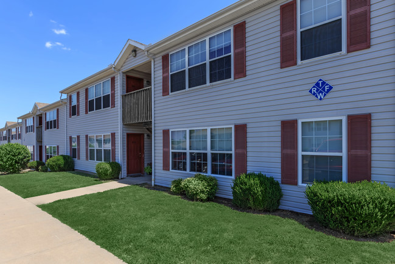
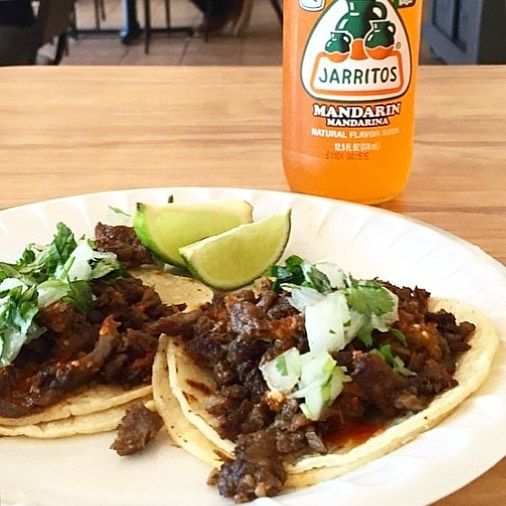

<!DOCTYPE html> 
<html lang="en">

</html>

<head>
    <meta charset="UTF-8">
    <meta name="viewport" content="width=device-width, initial-scale=1.0">
    <meta http-equiv="X-UA-Compatible" content="ie-edge"> 
    <title> Welcome to the Ment </title> 
    <link rel= "stylesheet" href= "main.css">

</head>
   
<body>

    <h1>
       
        Welcome to the Ment

    </h1>

    <h2>

        Ever get tired of hanging out at the same spot day in and day out? Is dorm life not everything you thought it would be? Are you and your crew tired of driving around town for hours on end just because there is nothing to do? Sounds like you need another place to hang out.

    </h2>

    

    <h3>

        What is the Ment? 

    </h3>

    <h4>

        The Ment is the coolest place to hang out in Winfield. Located on the east side of 12th street, these apartments house some of SCs finest students. VIPs such as basketball champs, soccer all stars, golf pros, and professional gamers live in these presitigous apartments. Run by the nicest lady in Winfield, Mrs. Connie, Silverwood is the place to be for your off campus activities. "The Ment" specifically is the apartment of the one and only JC Fuentes and Tsena Hateki, who enjoy other peoples company and are always looking hang out and chill. 

    </h4>

    

    <h5>

        What we offer 

    </h5>

    <h6>

        Here at The Ment, we offer an escape from the hardships of college life. Whether you need a break from homework, or you don't feel like going to class, or just want to get off campus for awhile, The Ment can be your escape from reality. 

    </h6>

</body>

<body2>

    <h1>

        Taco Tuesday 

    </h1>

    <h2>

        Join us every Tuesday for some south of the border cuisine. We offer tacos using authentic meats imported all the way from the markets of Monterrey. Our tacos are made to order using the freshest of ingrediants we have available. Each taco comes with a bottled soda and a side of rice. So practice your spanish and come eat some tacos every Tuesday evening only at The Ment.

    </h2>

    

    <h3>

        Game Night Thursday

    </h3>

    <h4>

        Want to test your luck? Or maybe you want destroy your friends at some uno? Or maybe you want to become the strongest person of the board and be the first one to have a Monopoly? Join us every Thursday for some fun and games. We have all kinds of options from board games, to card games, to video games. There is nothing like being the best of the best and proving your skill to other players. So come be a gamer for a night and play some games at our weekly game night meetings only at The Ment. 

    </h4>
    
   

   <h5>

        Movie Night Friday

   </h5>

   <h6>

        Everyone loves a good movie. Yet another activity for students to relax and enjoy themselves. Join us every Friday night for a quality film. We alternate every week for a new genre. Options include horror, comedy, action, sci-fi, etc. We have plenty of seating and a 70 inch 4K smart tv to watch these movies in style. Come over for a movie only at The Ment.

   </h6>

    


</body2>

<body3>

    <h1>

        NFL Sunday 

    </h1>

    
    <h2>

        For our football fans, we offer the entire NFL Sunday Ticket package. Watch your favorite sports teams compete for weekly bragging rights and do so surrounded by other football fans. Whether you like the Patriots, Cheifs, or Cowboys, you can enjoy watching a good old fashioned game of football! We also partner with Pizza Hut to provide you unlimited pizza and wings for the low price of $5.99. So come on by and watch some football only at The Ment!
        
    </h2>

    

</body3>
